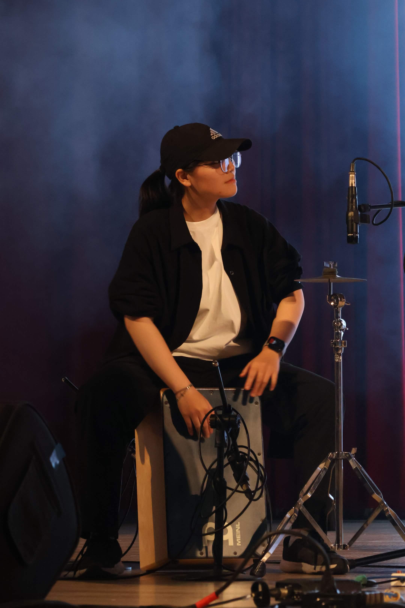
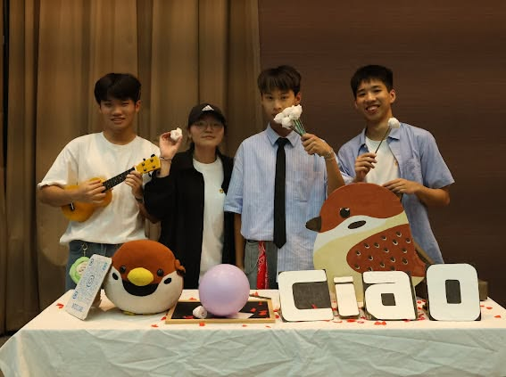
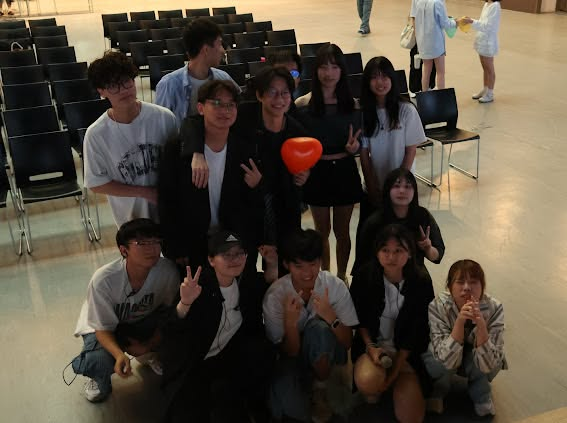

遊戲節奏與打擊音樂

除了寫網頁與程式設計之外，我非常喜歡音樂與節奏感強烈的活動。平常在社團喜歡打木箱鼓（Cajón），享受雙手在舞台上敲擊出不同低音與高音層次的快感，也是我平時抒發課業壓力的最佳方式。
在遊戲方面，我特別鍾愛音樂節奏遊戲與需要專注反應的射擊競技遊戲，訓練手眼協調與節奏精準度，每次突破個人最高分或順利撤離都很有成就感。
我的日常能量指數
☕ 黑咖啡續命指數
🥁 木箱鼓節奏魂
🎮 遊戲專注度
日常四大能量來源
☕ 冰美式黑咖啡
每天開機必備的清醒儀式，喜歡純粹不加糖奶、苦澀回甘的口感。
🥁 社團木箱鼓演出
在舞台上跟著音樂節奏敲擊木箱鼓，享受和社團夥伴一起排練與公演的熱血。
🎮 三角洲與節奏遊戲
下課後的放鬆首選，透過戰術射擊與節奏譜面挑戰手眼協調與反應速度。
🌊 看海吹風放空
寫程式遇到卡關時最好的充電方式，吹吹海風換個角度就能找到新靈感。
生活輯影
將滑鼠移到照片上，看看我的社團與日常紀錄：


